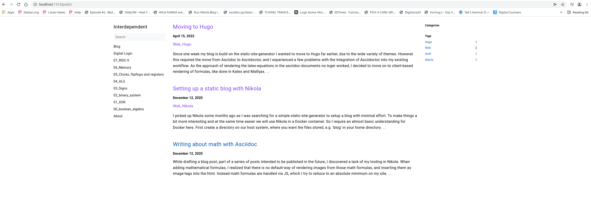

Seit einer Woche basiert mein Blog auf dem Static-Site-Generator Hugo. Ich wollte schon viel früher zu Hugo wechseln, da es eine große Auswahl an Themes gibt. Dies erforderte jedoch den Wechsel von Asciidoc zu Asciidoctor, und ich hatte einige Probleme mit der Integration von Asciidoctor in meinen bestehenden Arbeitsablauf. Da der Ansatz, die Latex-Gleichungen in den Asciidoc-Dokumenten darzustellen, nicht mehr funktionierte, entschied ich mich, auf die clientbasierte Darstellung von Formeln umzusteigen, wie sie in KaTex und Mathjax verwendet wird.
Um Hugo, Asciidoctor und seine Abhängigkeiten ohne Kopfschmerzen zu installieren, nutzen wir wieder Docker und sein riesiges Ökosystem: Jemand hat bereits Docker-Images für Hugo mit integriertem Asciidoctor erstellt, sodass wir nicht die manchmal umständliche Einrichtung von Asciidoctor und seinen Abhängigkeiten durchlaufen müssen.
Wenn Docker installiert ist, führen wir in der Shell (für Linux und Mac OS, für Windows die Powershell) den folgenden Befehl aus:
docker pull klakegg/hugo:edge-asciidoctorDies zieht ein Image mit der neuesten Hugo-Version und integriertem Asciidoctor aus dem Docker-Repo klakegg.
Wir navigieren zum übergeordneten Verzeichnis unseres Blogs und führen den folgenden Befehl aus:
docker run -it -v $(pwd):/src klakegg/hugo:edge-asciidoctor new site hugo/blogDadurch wird das Grundgerüst unserer neuen Website erstellt, das wie folgt aussieht:
old-blog
hugo
└── blog
├── archetypes
├── config.toml
├── content
├── data
├── layouts
├── static
└── themesWir haben noch kein Theme installiert, also gehen wir zu themes und wählen unser Lieblings-Theme aus, meines ist Book. Wir installieren es per einfachem Download oder über git:
cd hugo/themes
git clone https://github.com/alex-shpak/hugo-bookund fügen die folgende Zeile hinzu:
theme = "hugo-book"zu unserer config.toml. Da wir gerade dabei sind, fügen wir auch die folgende Richtlinie, die seit Hugo-Version 0.91 erforderlich ist, zu unserer config.toml hinzu.
Beispiel config.toml block
[security]
enableInlineShortcodes = false
[security.exec]
allow = ['^dart-sass-embedded$', '^go$', '^npx$', '^postcss$', '^asciidoctor$']
osEnv = ['(?i)^(PATH|PATHEXT|APPDATA|TMP|TEMP|TERM)$']Jetzt müssen wir den Inhalt vom alten Blog in den neuen verschieben. Wir machen etwas Ähnliches wie hier:
cp ../old_blog/pages ../hugo/content/docs
cp ../old_blog/posts ../hugo/content/posts
cp ../old_blog/images ../hugo/content/docs/imagesJetzt müssen wir die adoc-Kopfzeilen in das Hugo-Frontmatter-Format konvertieren und auch die Asciidoc-Syntax an das neue Format anpassen. Damit unser neuer Blog die in Latex geschriebenen Gleichungen und Formeln verarbeiten kann, müssen wir das Skript für KaTex/Mathjax in eine Layout-Datei im Design unserer Wahl einfügen: KaTex integrieren
Um zu sehen, was wir ändern müssen, führen wir den Hugo-Server aus und gehen im Browser zur angegebenen Adresse:
docker run -it -v $(pwd):/src -p 1313:1313 swehrend/hugo-ext-asciidoctor:edge-ext-debian server --renderToDiskDies führt zu einem Ergebnis, das in etwa so aussieht:

Wenn wir mit dem Ergebnis zufrieden sind, können wir unsere Website mit einem rsync auf unserem Webspace bereitstellen,
etwa mit dem folgenden Befehl:
rsync -rav public/ wehrend@giclas.uberspace.de:/var/www/virtual/wehrend/html